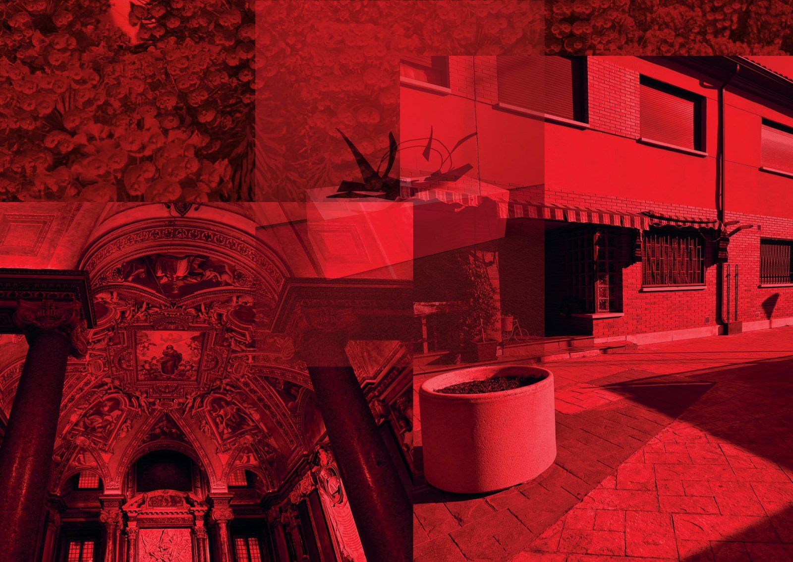

01 / 09
En donde se saben las cosas
- Año
- 2026
- Medidas
- 10 × 15 cm
- Técnica
- Fotografía digital intervenida mediante superposición digital
Esta obra habla sobre cómo los espacios adquieren memoria. Las arquitecturas y los objetos parecen contener experiencias anteriores, como si conservaran algo de quienes los atravesaron. La obra habla de esos lugares donde el conocimiento no es racional, sino emocional e intuitivo, afectando así a cómo somos.